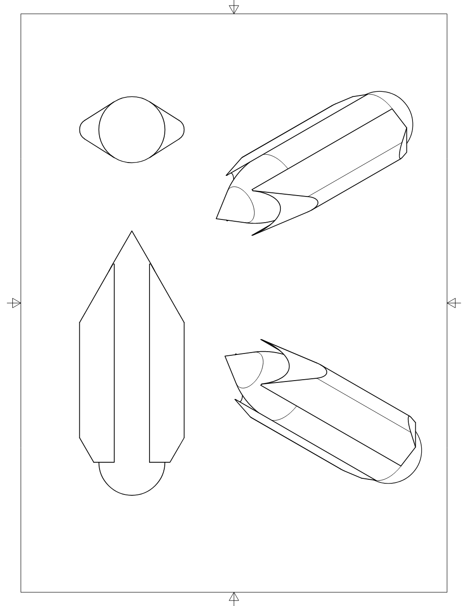

Robotics Projects
Welcoming our new overlords…
Fixed Wing UAV
Description:
open-source, open-hardware driven custom fixed-wing UAV platform for efficient mapping projects and long-distance linear asset inspection
User Story:
Quadcopter UAVs are great for inspections and tight places, but require many batteries and many flights to capture site imagery used for mapping. They are also expensive and difficult to control. With so many camera and sensor options available off-the-shelf, a fixed-wing platform like the eBee makes a lot of sense for certain types of missions.
Feature Set:
- 500 gram payload
- Assisted take-off
- Automated flights
Autonomous Underwater Vehicle
Description: A long-range, long-duration, aquatic robotic sensor platform for locating and investigating underwater interests
User Story: Many things are down there in the deep, waiting discovery. Metal, habitat, species…
many things, in many places, some very remote. I want a platform that can travel the world with any sensor I can dream of, and deliver itself back to me.
Feature Set:
- Surface capabilities:
- Solar charging
- Navigation
- Distance (proximity) sensors
- Surface GPS
- Sonar scanning
- Subsurface capabilities:
- Dives to 1000m, up to 72 hrs
- Imaging
- Scheduled
- Event-driven
- Sudden light change
- Proximity alert
- AI
- 360-degree FOV
- Low-light
- Mission-based
- Wrecks
- Reefs
- Metal detection?
- Bathymetric scans?
- Evasion?
- Locomotion
- Low-speed/power, mostly currents
- Impeller side tubes with vent clearing
- Emergency front bounacy and copmressed air jet
- Communications/data link
- ASPRS for global, daily logging of location, vital metrics
- On-demand wifi for debugging
- Low-power, long-range packet radio receiver for actuating beacons
- Iridium sat comms
- Fail-safes:
- Coordinate with round-the-world sailing orgs for manual recovery
- Emergency surfacing and diving
- Beacons (event-driven)
- Shortwave APRS
- Lights
- Packet radio for near-shore communication
- 7-day reserve power
- Hibernation mode
- Warning labeling in many languages
- Claws for getting unstuck from tight places and fishing lines??
- Impellers can generate power?
Phasing:
- Build manual prototype with goPro
- Sensors package development and testing
- Upgrades for survivability and power reserve
- Mission programming and data logging
- 24 hr Otisco test
- 30 day Ontario test
- 180 day Gulf Stream mission (launch in Ft Pierce in Feb, recover in Iceland)
- Re-engineer into a small remora-style package to find and attach to large animals??
BOM:
- Big ass battery
- Flexible solar panels
- 300 psi rated enclosure
Notes:

Pool Octobot
Description: a multi-armed, multi-sensored robot for cleaning pools
User Story: Cleaning pools involves scrubbing algal growth from surfaces, and sucking up debris. What better format of robot to do this but something with 8 arms, a beak mouth, and a bag to hold debris?
Feature Set:
- Color sensors for detecting growth, brushes for removing
- Tactile sensors for objects and climbing, suction and/or jets for locomotion
- Self-charging at remote dry dock
- Expandable debris bag
- Skin color changing - for fun. And camoflage
Phasing:
- Research sensors
Scarecrow Targeting System
Description: a camera-based object tracking software system
User Story: In the suburban warfare environment, its our ability to grow food versus mother nature’s ability to provide - gardens versus wildlife - me versus the creatures - fencing versus projectile-based discouragement. I want to defend my many hours of invested effort from the random and sneaky browsing of deer and dog.
Feature Set:
- Intelligent and real-time image tracking during day or night, based on sample images
- Housed in a scarecrow, with duplicate, stereo single-lens object trackers
- Detection alarms - audible, visible, and internet
- Directional actuator for firing projectiles, spray, flame, etc at the real-time coordinate of target
- 90% accurate against false-falses, 75% accurate against false-positives
- Video recording with target boxing
- Web-served catalog of recordings
- 130-degree FOV, 90-degree firing field
- Time-lapse photography built-in
Phasing:
- Software build of single-lens object tracker
- Hardware build of multiple trackers
- Build out of housing and alarms
- UAT
- Build out of targeting and firing
BOM:
- RPi3 w/ Camera x 4
Invasive Species Patroller
Description: An outdoor version of a roomba-like crawler than can identify and deal with a targeted invasive species
Signal-Tracking Antenna Mount
Description:
A mechanism to automate the pointing of recevier/transmitter sensors.
User Story:
If my awesome new FOS laser link at remote data IoT device can’t communicate, its not nearly as useful.
CAM Maker Frame
Description:
A frame that can house a variety of tools on a rack and pinion drive system, and a vacuum table to anchor pieces
User Story:
Why have separate machines for all the tools when they all can work with one…
Features:
- Tools:
- pens/markers
- router
- drag knife
- laser
- water jet
- metal torch